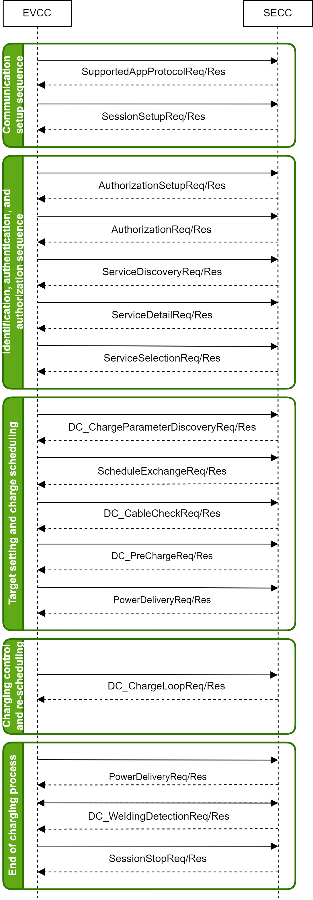
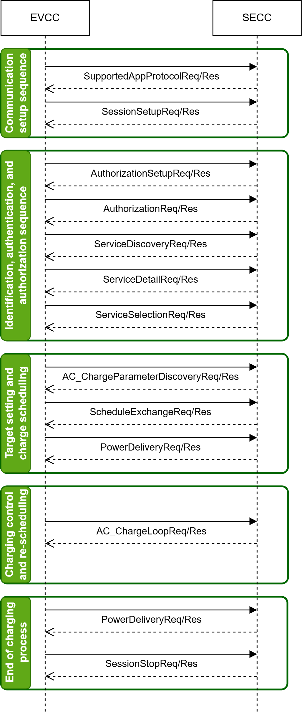
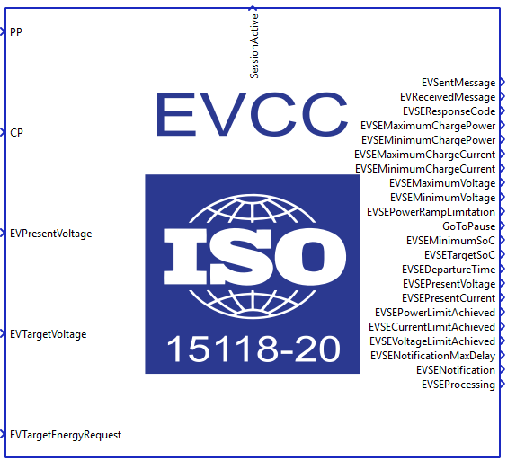
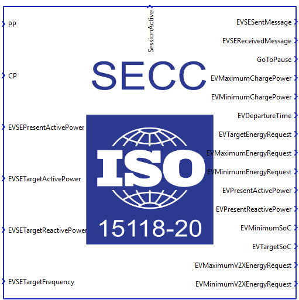

ISO 15118-20 Protocol
Description of the ISO 15118-20 protocol implementation in the Typhoon HIL toolchain.
ISO 15118-20 Protocol
ISO 15118-20 protocol is a specific part of the ISO 15118 standard and it is an extension of the ISO 15118-2 Protocol.
- Bidirectional Power Transfer (BPT): the ability to charge and discharge a vehicle
- Wireless Power Transfer (WPT): the definition of messages to exchange the necessary information between the vehicle and the wireless charger as a supplement of the IEC 61980 protocol
- Automated Connection Device (ACD): an automatic connection and disconnection process for energy transfer by conduction. A typical example is that of the pantograph for an electric bus
- Dynamic Control Mode: the EV yields control to the charging station and the charger provides single power setpoints without any negotiation of charging schedules
- Stronger data security:
- TLS 1.3 is mandatory for all use cases
- New, more secure cipher suites with longer keys: TLS_AES_256_GCM_SHA384, TLS_CHACHA20_POLY1305_SHA256
- New named elliptic curve is ed448
- Easier multi-contract handling: EV can identify itself to the charging station using more than just one contract certificate
Message sequence for an ISO 15118-20 DC charging session
The charging process for a DC charging session carried out by ISO 15118-20 [2] is illustrated in Figure 1.

- Communication setup sequence:
- SupportedAppProtocolReq/Res: The EV and the charging station use this request-response message pair to agree upon a protocol version. During this transition phase, it is important that both the EV and charging station speak the same version of ISO 15118. If they are not compatible, it will not be possible to initiate an ISO 15118 charging session.
- SessionSetupReq/Res: By using the SessionSetupReq message the EVCC establishes a V2G communication session. With the SessionSetupRes the SECC notifies the EVCC with an enclosed ResponseCode, whether establishing a new session or joining a previous communication session was successful or not.
- Identification, authentication and authorization sequence:
- AuthorizationSetupReq/Res: The AuthorizationSetupReq message is empty, besides the header, and is only required to start the process of choosing the authorization method. With the AuthorizationSetupRes message the SECC provides information about the available authorization modes and whether the certificate installation service is available.
- AuthorizationReq/Res: The AuthorizationReq message is sent from the EVCC to the SECC to request authorization for charging, providing information about the EVCC and asking the SECC to verify and approve the charging request. The AuthorizationRes message is generated by the SECC after verifying the challenge signature and the certificate along with its chain if not previously verified in the case of PnC, whereas for EIM, it is sent relying on external inputs and/or SECC setup/configuration.
- ServiceDiscoveryReq/Res: The ServiceDiscovery enables the EVCC to find all services provided by the SECC. By sending the ServiceDiscoveryReq message the EVCC triggers the SECC to send information about all services offered by the SECC. Furthermore, the EVCC can limit for particular services by sending a list of supported service IDs. After receiving the ServiceDisoveryReq message of the EVCC the SECC sends the ServiceDiscoveryRes message. It includes a list of all services available at the SECC.
- ServiceDetailReq/Res: By sending the ServiceDetailReq message the EVCC requests the SECC to send specific additional information about services offered by the EVSE. After receiving the ServiceDetailReq message of an EVCC the SECC sends the ServiceDetailRes message and provides details about services.
- ServiceSelectionReq/Res: Based on the services provided by the SECC, this message pair allows the transmission of the selected services and related parameter sets.
- Target setting and charge scheduling:
- DC_ChargeParameterDiscoveryReq/Res: After being authorized for charging at the EVSE (SECC) the EVCC and the SECC negotiate the energy transfer parameters with the DC_ChargeParameterDiscovery message pair. By sending the DC_ChargeParameterDiscoveryReq message the EVCC provides its energy transfer parameters to the SECC. This message provides status information about the EV, i.e. the capabilities of the EV charging system. With the DC_ChargeParameterDiscoveryRes message the SECC provides applicable charge parameters from the grid’s perspective.
- ScheduleExchangeReq/Res: After negotiating the energy transfer parameters with the ChargeParameterDiscovery message pair, the SECC provides information about the schedules, which the EVCC might restrict first. By sending the ScheduleExchangeReq message the EVCC provides its energy transfer parameters to the SECC. This message provides status information about the EV and additional energy transfer parameters, like estimated energy amounts for recharging the EV and the point in time the user intends to leave the EVSE. With the ScheduleExchangeRes message the SECC provides applicable energy transfer parameters from the grid’s perspective.
- DC_CableCheckReq/Res: To ensure safety in DC energy transfer, a cable check shall be performed. The DC_CableCheckReq asks for the cable check status of the EVSE and, for example, tells the EVSE if the connector is locked on EV side and if the EV is ready to transfer energy. After receiving the DC_CableCheckReq from the EVCC the SECC sends the DC_CableCheckRes informing the EVCC about the result of the cable check and EVSE status.
- DC_PreChargeReq/Res: PreCharge is used for adjusting the EVSE output voltage to the EV battery voltage. The DC_PreChargeReq is used to start the Pre Charge process from EV side. After receiving the DC_PreChargeReq from the EVCC the SECC sends the DC_PreChargeRes informing the EV about the EVSE status and the present EVSE output voltage.
- PowerDeliveryReq/Res: The power delivery message exchange marks the point in time when the EVSE provides voltage to its output power outlet and the EV can start the power transfer.
- Charging control and re-scheduling:
- DC_ChargeLoopReq/Res: By sending the DC_ChargeLoopReq the EV requests a certain current from the EVSE. Also, the target voltage, current and voltage difference are transferred. After receiving the DC_ChargeLoopReq from the EVCC the SECC sends the DC_ChargeLoopRes informing the EV about the EVSE status and the present EVSE output voltage and current.
- End of charging process:
- DC_WeldingDetectionReq/Res: The Welding Detection messages described in this subclause allow to implement the Welding Detection mechanism according to IEC 61851-23. By sending the DC_WeldingDetectionReq the EV requests welding detection on EVSE side. After receiving the DC_WeldingDetectionReq from the EVCC, the SECC sends the Welding Detection Response informing the EV about the EVSE status and the present EVSE output voltage.
- SessionStopReq/Res: By sending the SessionStopReq the EVCC requests termination of the energy transfer process. After receiving the SessionStopReq of the EVCC the SECC sends the SessionStopRes informing the EVCC if terminating the energy transfer process was successful.
Message sequence for an ISO 15118-20 AC charging session
The charging process for a AC charging session carried out by ISO 15118-20 [2] is illustrated in Figure 2.

A detailed explanation of the sequence is as follows [1][2]:
- Communication setup sequence:
- SupportedAppProtocolReq/Res: The EV and the charging station use this request-response message pair to agree upon a protocol version. During this transition phase, it is important that both the EV and charging station speak the same version of ISO 15118. If they are not compatible, it will not be possible to initiate an ISO 15118 charging session.
- SessionSetupReq/Res: By using the SessionSetupReq message the EVCC establishes a V2G communication session. With the SessionSetupRes the SECC notifies the EVCC with an enclosed ResponseCode, whether establishing a new session or joining a previous communication session was successful or not.
- Identification, authentication and authorization sequence:
- AuthorizationSetupReq/Res: The AuthorizationSetupReq message is empty, besides the header, and is only required to start the process of choosing the authorization method. With the AuthorizationSetupRes message the SECC provides information about the available authorization modes and whether the certificate installation service is available.
- AuthorizationReq/Res: The AuthorizationReq message is sent from the EVCC to the SECC to request authorization for charging, providing information about the EVCC and asking the SECC to verify and approve the charging request. The AuthorizationRes message is generated by the SECC after verifying the challenge signature and the certificate along with its chain if not previously verified in the case of PnC, whereas for EIM, it is sent relying on external inputs and/or SECC setup/configuration.
- ServiceDiscoveryReq/Res: The ServiceDiscovery enables the EVCC to find all services provided by the SECC. By sending the ServiceDiscoveryReq message the EVCC triggers the SECC to send information about all services offered by the SECC. Furthermore, the EVCC can limit for particular services by sending a list of supported service IDs. After receiving the ServiceDisoveryReq message of the EVCC the SECC sends the ServiceDiscoveryRes message. It includes a list of all services available at the SECC.
- ServiceDetailReq/Res: By sending the ServiceDetailReq message the EVCC requests the SECC to send specific additional information about services offered by the EVSE. After receiving the ServiceDetailReq message of an EVCC the SECC sends the ServiceDetailRes message and provides details about services.
- ServiceSelectionReq/Res: Based on the services provided by the SECC, this message pair allows the transmission of the selected services and related parameter sets.
- Target setting and charge scheduling:
- AC_ChargeParameterDiscoveryReq/Res: After being authorized for charging at the EVSE (SECC) the EVCC and the SECC negotiate the energy transfer parameters with the AC_ChargeParameterDiscovery message pair. By sending the AC_ChargeParameterDiscoveryReq message the EVCC provides its energy transfer parameters to the SECC. This message provides status information about the EV, i.e. the capabilities of the EV charging system. With the AC_ChargeParameterDiscoveryRes message the SECC provides applicable charge parameters from the grid’s perspective.
- ScheduleExchangeReq/Res: After negotiating the energy transfer parameters with the ChargeParameterDiscovery message pair, the SECC provides information about the schedules, which the EVCC might restrict first. By sending the ScheduleExchangeReq message the EVCC provides its energy transfer parameters to the SECC. This message provides status information about the EV and additional energy transfer parameters, like estimated energy amounts for recharging the EV and the point in time the user intends to leave the EVSE. With the ScheduleExchangeRes message the SECC provides applicable energy transfer parameters from the grid’s perspective.
- PowerDeliveryReq/Res: The power delivery message exchange marks the point in time when the EVSE provides voltage to its output power outlet and the EV can start the power transfer.
- Charging control and re-scheduling:
- AC_ChargeLoopReq/Res: The AC_ChargeLoop message pair provides continuous data exchange between SEC and EVCC. Additionaly, it allows sanity checks on the meter readings provided by the SECC. After receiving the AC_ChargeLoopReq from the EVCC, the SECC sends the AC_ChargeLoopRes.
- End of charging process:
- SessionStopReq/Res: By sending the SessionStopReq the EVCC requests termination of the energy transfer process. After receiving the SessionStopReq of the EVCC the SECC sends the SessionStopRes informing the EVCC if terminating the energy transfer process was successful.
ISO 15118-20 protocol implementation in Typhoon HIL toolchain
Although IEC 61851 defines that the EVCC and SECC communicate using ISO 15118-20 through Power Line Communication (PLC) the protocol itself is Ethernet-based, and as such is implemented in the Typhoon HIL toolchain. It is supported by the following Typhoon HIL devices: HIL402, HIL101, HIL404, HIL602+, HIL604, HIL506, and HIL606. To convert the Ethernet to PLC, additional modems, such as the Green Phy module, can be used.
The Electric Vehicle side of communication is implemented using ISO 15118-20 EVCC component located in the Communication → EV charging → ISO 15118-20 folder in the Schematic Editor Library.
ISO 15118-20 EVCC component
The ISO15118-20 EVCC component implements the EV side of the protocol. It is important to specify that the component implements only the communication interface and not the controller itself. In other words, the component is used only to relay the necessary messages between the EVCC and SECC. The controller (or logic) part is left to the user to implement using Signal Processing components.
The ISO 15118-20 EVCC component is shown in Figure 3.
The ISO 15118-20 EVCC properties lets you customize your message structure based on several option groups, defined below. Changing the option on the left affects which Charge parameters appear on the right. Additional information on Charge parameters is shown in the ISO 15118-20 EVCC Charge parameters property value section.
- Connection options:
- Medium type:
- Choose the medium type through which SECC and EVCC will communicate. Ethernet and PLC medium type are available.
- Ethernet port:
- Select the Ethernet port on the back of the HIL device that is used by the ISO 15118-20 EVCC application. For 4th generation devices (HIL101, HIL404, HIL506, and HIL606), any available port can be used for communication, while older devices only support communication over port 1.
- Connection type:
- Choose the connection type between EV and EVSE. In this version of protocol Secured connection is mandatory.
- Medium type:
- Payment:
- Payment option:
- Choose the payment option that the EV intends to use. External Payment and Contract payment options are available.
- The Contract payment option is available for use, but automatic certificate installation is not supported in the current version of implementation.
- Also, the used elliptic curve version is not ed448, as defined by the ISO 15118-20 protocol. Instead, the used elliptic curve is sec256r1 as defined by the ISO 15118-2 protocol.
- Payment option:
- Certificates:
- Import folder with certificates:
- Navigate to the folder containing the necessary certificates from SECC, which will be imported into EVCC in order to establish the desired communication.
- The required certificate is:
- v2gRootCACert.pem
- Imported folder path:
- Displays the filepath or chosen folder.
- Path type:
- Depending on the selected value, the path to the folder will be Absolute or Relative.
- Import folder with certificates:
- Energy Service:
- Supported energy service:
- Choose the energy service that the EV expects. DC, DC BPT, AC, and AC BPT are available.
- Connector type DC:
- Available if energy service is set to DC or DC BPT.
- Choose the DC connector type. Core, Extended, Dual2, and Dual4 are available.
- Connector type AC:
- Available if energy service is set to AC or AC BPT.
- Choose the AC connector type. SinglePhase and ThreePhase are available.
- Control mode:
- Choose the control mode that will be used. Dynamic and Scheduled are available.
- Supported energy service:
- Meter Info:
- Receive meter info:
- If set to "True", the EV will receive MeterInfo by the EVSE.
- Receive meter info:
- Welding detection:
- Perform Welding detection:
- Available if energy service is set to DC or DC BPT.
- Choose if Welding detection request message will be included in the communication session.
- Perform Welding detection:
- Voltage accuracy:
- Pre-charge voltage accuracy:
- Available if energy service is set to DC or DC BPT.
- By the IEC 61851 standard, the main charging contactor on the EV side can be closed only when there is no significant offset between the EVSE output voltage and the Battery voltage in order to prevent current inrush. The Pre-charge voltage accuracy defines that offset.
- Pre-charge voltage accuracy:
- Execution rate:
- Execution rate of the ISO 15118-20 EVCC component.
- Logging:
- Logging level:
- Logging priority level of the ISO 15118-20 EVCC component. Possible options are Off, Info, Debug, Warning, and Error. Based on what is selected, messages of that rank and higher will be displayed.
- Logging output:
- Available if Logging level is set to Info, Debug, Warning, or Error.
- Logging ouput specifies where logging messages will appear.
- UDP port:
- If UDP is chosen for logging the output, messages will appear on UDP broadcast network. The UDP port specifies a port on which logging messages will appear.
- Logging level:
- Charge parameters:
- Charge parameters DC:
- Available if energy service is set to DC or DC BPT.
- The Charge parameters DC defines all the static values that describe the EV request. A detailed description of all the values is in ISO 15118-20 EVCC Charge parameters property value.
- Charge parameters AC:
- Available if energy service is set to AC or AC BPT.
- The Charge parameters AC defines all the static values that describe the EV request. A detailed description of all the values is in ISO 15118-20 EVCC Charge parameters property value.
- Charge parameters DC:
- Include parameters:
- Include target SOC:
- Defines if the TargetSOC value will be present in Request messages. If the value is set to True, an additional terminal will be created on the component.
- Include target energy request:
- Available if control mode is set to Scheduled.
- Defines if the EVTargetEnergyRequest value will be present in Request messages. If the value is set to True, an additional terminal will be created on the component.
- Include present reactive power:
- Available if energy service is set to AC or AC BPT, and the control mode is set to Scheduled.
- Defines if the EVPresentReactivePower value will present in Request message. If the value is set to True, an additional terminal will be created on the component.
- Include present reactive power l2:
- Available if energy service is set to AC or AC BPT, and the connector type is set to ThreePhase.
- Defines if the EVPresentReactivePower_L2 value will be present in Request message. If the value is set to True, an additional terminal will be created on the component.
- Include present reactive power l3:
- Available if energy service is set to AC or AC BPT, and the connector type is set to ThreePhase.
- Defines if the EVPresentReactivePower_L3 value will be present in Request message. If the value is set to True, an additional terminal will be created on the component.
- Include present active power l2:
- Available if energy service is set to AC or AC BPT, and the connector type is set to ThreePhase.
- Define if the EVPresentActivePower_L2 value will be present in Request message. If the value is set to True, an additional terminal will be created on the component.
- Include present active power l3:
- Available if energy service is set to AC or AC BPT, and the connector type is set to ThreePhase.
- Define if the EVPresentActivePower_L3 value will be present in Request message. If the value is set to True, an additional terminal will be created on the component.
- Include target SOC:
ISO 15118-20 EVCC Charge parameters property value
Charge parameters are used to define the EV specification and ratings. These parameters are used across different request messages such as DC_ChargeParameterDiscoveryReq, ScheduleExchangeReq, DC_PreChargeReq, PowerDeliveryReq, and CurrentDemandReq for DC charging, as well as AC_ChargeParameterDiscoveryReq, ScheduleExchangeReq, PowerDeliveryReq, and CurrentDemandReq for AC charging. Some of these parameters are optional and some are mandatory. Also, the presence of some of these parameters in the table depends on the selected Connector Type, Control Mode, and Energy Service. The definitions are listed in Definitions of charge parameters.
The Charge parameters property is defined as a Python dictionary with pre-defined fields. All of these fields are also dictionaries with the fields value, exponent and include. The presence of these fields correlate to the parameter itself. If the parameter is optional, the include field is mandatory, if the parameter is of type RationalNumber the exponent is mandatory, and if the property is static, the value field is mandatory.
Static parameters are those that are not changed during the charging process, such as Maximum Charge Power, Minimum Charge Power, Maximum Charge Current, Minimum Charge Current, etc. On the other hand, dynamic properties change value during the charging process. The dynamic properties are Target SOC, Target Energy Request, Present Voltage, Target Voltage, Target Current, PresentActivePower, PresentActivePower_L2, PresentActivePower_L3, PresentReactivePower, PresentReactivePower_L2, and PresentActivePower_L3. These values are specified by the input terminals on the component.
RationalNumber is a specific type defined by the ISO 15118-20 standard and it consists of value and exponent. The value is a short type (-32768 - 32767) and the exponent is byte (-3 - 3). The real value is calculated using the formula:
- Maximum Charge Power:
- Mandatory parameter
- Type: RationalNumber
- Range: 0 - 200000 W
- Maximum charge power supported by the EV.
- Maximum Charge Power L2:
- Available if energy service is set to AC or AC BPT, and ThreePhase connector type is selected.
- Optional parameter
- Type: RationalNumber
- Range: 0 - 200000 W
- Maximum charge power supported by the EV on phase L2.
- Maximum Charge Power L3:
- Available if energy service is set to AC or AC BPT, and ThreePhase connector type is selected.
- Optional parameter
- Type: RationalNumber
- Range: 0 - 200000 W
- Maximum charge power supported by the EV on phase L3.
- Minimum Charge Power:
- Mandatory parameter
- Type: RationalNumber
- Range: 0 - 200000 W
- Minimum charge power allowed by the EV.
- Minimum Charge Power L2:
- Available if energy service is set to AC or AC BPT, and ThreePhase connector type is selected.
- Optional parameter
- Type: RationalNumber
- Range: 0 - 200000 W
- Minimum charge power allowed by the EV on phase L2.
- Minimum Charge Power L3:
- Available if energy service is set to AC or AC BPT, and ThreePhase connector type is selected.
- Optional parameter
- Type: RationalNumber
- Range: 0 - 200000 W
- Minimum charge power allowed by the EV on phase L3.
- Present Active Power:
- Available if energy service is set to AC or AC BPT.
- Mandatory parameter
- Type: RationalNumber
- Range: 0 - 200000 W
- Present active power achieved by the EV.
- Present Active Power L2:
- Available if energy service is set to AC or AC BPT, and ThreePhase connector type is selected.
- Optional parameter
- Type: RationalNumber
- Range: 0 - 200000 W
- Present active power achieved by the EV on phase L2..
- Present Active Power L3:
- Available if energy service is set to AC or AC BPT, and ThreePhase connector type is selected.
- Optional parameter
- Type: RationalNumber
- Range: 0 - 200000 W
- Present active power achieved by the EV on phase L3.
- Present Reactive Power:
- Available if energy service is set to AC or AC BPT.
- Mandatory parameter in Dynamic control mode, optional in Scheduled control mode.
- Type: RationalNumber
- Range: 0 - 200000 W
- Present reactive power achieved by the EV.
- Present Reactive Power L2:
- Available if energy service is set to AC or AC BPT, and ThreePhase connector type is selected.
- Optional parameter
- Type: RationalNumber
- Range: 0 - 200000 W
- Present reactive power achieved by the EV on phase L2.
- Present Reactive Power L3:
- Available if energy service is set to AC or AC BPT, and ThreePhase connector type is selected.
- Optional parameter
- Type: RationalNumber
- Range: 0 - 200000 W
- Present reactive power achieved by the EV on phase L3.
- Maximum Charge Current:
- Available if energy service is set to DC or DC BPT.
- Mandatory parameter
- Type: RationalNumber
- Range: 0 - 400 A
- Maximum charge current supported by the EV.
- Minimum Charge Current:
- Available if energy service is set to DC or DC BPT.
- Mandatory parameter
- Type: RationalNumber
- Range: 0 - 400 A
- Minimum charge current supported by the EV.
- Maximum Voltage:
- Available if energy service is set to DC or DC BPT.
- Mandatory parameter
- Type: RationalNumber
- Range: 0 - 1000 V
- Maximum voltage allowed by the EV.
- Minimum Voltage:
- Available if energy service is set to DC or DC BPT.
- Mandatory parameter
- Type: RationalNumber
- Range: 0 - 1000 V
- Minimum voltage allowed by the EV.
- Maximum Energy Request:
- Mandatory parameter in Dynamic control mode, optional in Scheduled control mode.
- Type: RationalNumber
- Range: 0 - 200000 Wh
- Maximum acceptable energy level of the EV.
- Minimum Energy Request:
- Mandatory parameter in Dynamic control mode, optional in Scheduled control mode.
- Type: RationalNumber
- Range: 0 - 200000 Wh
- The energy request of the EV needed to fulfill the minimum SOC specified by the owner.
- Maximum V2X Energy Request:
- Optional parameter
- Type: RationalNumber
- Range: 0 -200000 Wh
- Energy which may be charged until the PresentSOC has left the range dedicated for cycling activity. A negative value indicates that PresentSOC is above the V2X range.
- Minimum V2X Energy Request:
- Optional parameter
- Type: RationalNumber
- Range: 0 - 200000 Wh
- Energy which needs to be charged until the PresentSOC enters the range dedicated for cycling activity. A positive value indicates that PresentSOC is below the V2X range.
- Departure Time:
- Mandatory parameter in Dynamic control mode, optional in Scheduled control mode.
- Type: unsignedInt
- Range: 0 - 4294967295
- This element is used to indicate when the EV intends to finish the charging process.
- Minimum SOC:
- Optional parameter
- Type: byte
- Range: 0 - 100
- Minimum State of Charge EV needs to keep throughout the charging session.
- Maximum Supporting Points:
- Mandatory parameter
- Type: unsignedShort
- Range: 12 - 1024
- Indicates the maximal number of entries in the sub-elements of a ScheduleTuple, where it applies to all elements of PowerScheduleType and PriceRuleType. The SECC can transmit up to the maximum number of entries defined in this parameter.
- Target SOC:
- Optional parameter
- Type: byte
- Range: 0 - 100
- SOC at which the EV considers the battery to be fully charged.
- Target Energy Request:
- Mandatory parameter in Dynamic control mode, optional in Scheduled control mode.
- Type: RationalNumber
- Range: 0 - 200000 Wh
- The energy request of the EV needed to fulfill the target SOC specified by the owner.
- Present Voltage:
- Available if energy service is set to DC or DC BPT.
- Mandatory parameter
- Range: 0 -100 V
- Type: RationalNumber
- Present voltage of the EV.
- Target Voltage:
- Available if energy service is set to DC or DC BPT.
- Mandatory parameter
- Type: RationalNumber
- Range: 0 - 100 V
- Target voltage requested by the EV.
- Target Current:
- Available if energy service is set to DC or DC BPT.
- Mandatory parameter in Scheduled control mode.
- Type: RationalNumber
- Range: 0 - 400 A
- Target current requested by the EV.
- Maximum Discharge Power:
- Available if energy service is set to DC BPT or AC BPT.
- Mandatory parameter
- Type: RationalNumber
- Range: 0 - 200000 W
- Maximum discharge power supported by the EV.
- Maximum Discharge Power L2:
- Available if energy service is set to AC BPT, and ThreePhase connector type is selected.
- Optional parameter
- Type: RationalNumber
- Range: 0 - 200000 W
- Maximum discharge power supported by the EV on phase L2.
- Maximum Discharge Power L3:
- Available if energy service is set to AC BPT, and ThreePhase connector type is selected.
- Optional parameter
- Type: RationalNumber
- Range: 0 - 200000 W
- Maximum discharge power supported by the EV on phase L3.
- Minimum Discharge Power:
- Available if energy service is set to DC BPT or AC BPT.
- Mandatory parameter
- Type: RationalNumber
- Range: 0 - 200000 W
- Minimum discharge power allowed by the EV.
- Minimum Discharge Power L2:
- Available if energy service is set to or AC BPT, and ThreePhase connector type is selected.
- Optional parameter
- Type: RationalNumber
- Range: 0 - 200000 W
- Minimum discharge power allowed by the EV on phase L2.
- Minimum Discharge Power L3:
- Available if energy service is set to AC BPT, and ThreePhase connector type is selected.
- Optional parameter
- Type: RationalNumber
- Range: 0 - 200000 W
- Minimum discharge power allowed by the EV on phase L3.
- Maximum Discharge Current:
- Available if energy service is set to DC BPT.
- Mandatory parameter
- Type: RationalNumber
- Range: 0 - 400 A
- Maximum discharge current supported by the EV.
- Minimum Discharge Current:
- Available if energy service is set to DC BPT.
- Mandatory parameter
- Type: RationalNumber
- Range: 0 - 400 A
- Minimum discharge current allowed by the EV.
ISO 15118-20 EVCC Input/Output terminals and State values
The Signal Processing signals are passed to and from the ISO 15118-20 EVCC component using its terminals.
If the value of an output terminal is '-1', that indicates that this particular value isn't used in the message received by the SECC. This applies to optional parameters in messages.
Not all values are acceptable and correct for all terminals. Some of them use integer values, some real and some states. The following list explains how each terminal is supposed to be used:
- Common terminals (AC and DC):
- PP - rather than passing the voltage level of the Proximity Pilot
(PP) signal, the PP state should be passed defined as:
- PP_STATE_ERROR = -1
- PP_STATE_DISCONNECTED = 0
- PP_STATE_CONNECTED = 1
- PP_STATE_DEPRESSED = 2
- CP - rather than passing the voltage level of the Control Pilot (CP)
signal, the CP state should be passed defined as:
- CP_STATE_ERROR = -1
- CP_STATE_A = 0
- CP_STATE_B = 1
- CP_STATE_C = 2
- CP_STATE_D = 3
- EVTargetEnergyRequest - Defined as an unsigned integer value.
- TargetSoC - Defined as an unsigned integer value.
- SessionActive - Defined as 0 if connection is not established and as 1 if a connection is established..
- EVSEResponseCode - Indicates the acknowledgment status of any of the
V2G messages received by the SECC. Defined as a state with values:
- OK = 0
- OK_CERT_EXPIRES_SOON = 1
- OK_NEW_SESSION_ESTABLISHED = 2
- OK_OLD_SESSION_JOINED = 3
- OK_POWER_TOLERANCE_CONFIRMED = 4
- WARN_AUTH_SELECTION_INVALID = 5
- WARN_CERT_EXPIRED = 6
- WARN_CERT_NOT_YET_VALID = 7
- WARN_CERT_REVOKED = 8
- WARN_CERT_VALIDATION_ERROR = 9
- WARN_CHALLENGE_INVALID = 10
- WARN_EIM_AUTH_FAILED = 11
- WARN_EMSP_UNKNOWN = 12
- WARN_EV_POWER_PROFILE_VIOLATION = 13
- WARN_GENERAL_PNC_AUTH_ERROR = 14
- WARN_NO_CERT_AVAILABLE = 15
- WARN_NO_CONTRACT_MATCHING_PCID_FOUND = 16
- WARN_POWER_TOLERANCE_NOT_CONFIRMED = 17
- WARN_SCHEDULE_RENEGOTIATION_FAILED = 18
- WARN_STANDBY_NOT_ALLOWED = 19
- WARN_WPT = 20
- FAILED = 21
- FAILED_ASSOCIATION_ERROR = 22
- FAILED_CONTACTOR_ERROR = 23
- FAILED_EV_POWER_PROFILE_INVALID = 24
- FAILED_EV_POWER_PROFILE_VIOLATION = 25
- FAILED_METERING_SIGNATURE_NOT_VALID = 26
- FAILED_NO_ENERGY_TRANSFER_SERVICE_SELECTED = 27
- FAILED_NO_SERVICE_RENEGOTIATION_SUPPORTED = 28
- FAILED_PAUSE_NOT_ALLOWED = 29
- FAILED_POWER_DELIVERY_NOT_APPLIED = 30
- FAILED_POWER_TOLERANCE_NOT_CONFIRMED = 31
- FAILED_SCHEDULE_RENEGOTIATION = 32
- FAILED_SCHEDULE_SELECTION_INVALID = 33
- FAILED_SEQUENCE_ERROR = 34
- FAILED_SERVICE_ID_INVALID = 35
- FAILED_SERVICE_SELECTION_INVALID = 36
- FAILED_SIGNATURE_ERROR = 37
- FAILED_UNKNOWN_SESSION = 38
- FAILED_WRONG_CHARGE_PARAMETER = 39
- EVSEMaximumChargePower - Defined as a floating point value.
- EVSEMinimumChargePower - Defined as a floating point value.
- EVSEPowerRampLimitation - Defined as a floating point value.
- GoToPause - Defined as 0 or 1.
- EVSEMinimumSoC - Defined as an unsigned integer value in range 0 - 100.
- EVSETargetSoC - Defined as an unsigned integer value in range 0 - 100.
- EVSEDepartureTime - Defined as a floating point value.
- EVSENotificationMaxDelay - Defined as a floating point value.
- EVSENotification - Defined as:
- PAUSE = 0
- EXIT_STANDBY = 1
- TERMINATE = 2
- METERING_CONFIRMATION = 3
- SERVICE_RENEGOTIATION = 5
- ChargedEnergyReadingWh - Defined as an unsigned integer value.
- EVSEMaximumDiscahrgePower - Defined as a floating point value.
- EVSEMinimumDischargePower - Defined as a floating point value.
- BPT_DischargedEnergyReadingWh - Defined as an unsigned integer value.
- EVSEProcessing - By using the EVSEProcessing parameter, the EVSE
can indicate to the EVCC that the processing is not finished but a
response message is sent to fulfill the timeout and performance
requirements. Used in messages: AuthorizationRes,
ScheduleExchangeRes, DC_CableCheckRes. Defined
as:
- FINISHED = 0
- ONGOING = 1
-
WAITING_FOR_CUSTOMER = 2
- PP - rather than passing the voltage level of the Proximity Pilot
(PP) signal, the PP state should be passed defined as:
- DC - specific terminals:
- EVPresentVoltage - Defined as an unsigned integer value.
- EVTargetVoltage - Defined as an unsigned integer value.
- EVTargetCurrent - Defined as an unsigned integer value.
- EVSentMessage - Indicates the last message that was sent by the EV.
Defined as:
- SUPPORTED_APP_PROTOCOL_REQ = 1
- SESSION_SETUP_REQ = 2
- AUTHORIZATION_SETUP_REQ = 3
- AUTHORIZATION_REQ = 4
- SERVICE_DISCOVERY_REQ = 5
- SERVICE_DETAIL_REQ = 6
- SERVICE_SELECTION_REQ = 7
- DC_CHARGE_PARAMETER_DISCOVERY_REQ = 8
- SCHEDULE_EXCHANGE_REQ = 9
- DC_CABLE_CHECK_REQ = 10
- DC_PRE_CHARGE_REQ = 11
- POWER_DELIVERY_REQ (ChargeProgress = START) = 12
- DC_CHARGE_LOOP_REQ = 13
- POWER_DELIVERY_REQ (ChargeProgress = STOP) = 14
- DC_WELDING_DETECTION_REQ = 15
- SESSION_STOP_REQ = 16
- EVReceivedMessage - Indicates the last message that was received
from the EVSE. Defined as:
- SUPPORTED_APP_PROTOCOL_RES = 1
- SESSION_SETUP_RES = 2
- AUTHORIZATION_SETUP_RES = 3
- AUTHORIZATION_RES = 4
- SERVICE_DISCOVERY_RES = 5
- SERVICE_DETAIL_RES = 6
- SERVICE_SELECTION_RES = 7
- DC_CHARGE_PARAMETER_DISCOVERY_RES = 8
- SCHEDULE_EXCHANGE_RES = 9
- DC_CABLE_CHECK_RES = 10
- DC_PRE_CHARGE_RES = 11
- POWER_DELIVERY_RES (ChargeProgress = START) = 12
- DC_CHARGE_LOOP_RES = 13
- POWER_DELIVERY_RES (ChargeProgress = STOP) = 14
- DC_WELDING_DETECTION_RES = 15
- SESSION_STOP_RES = 16
- EVSEMaximumChargeCurrent - Defined as a floating point value.
- EVSEMinimumChargeCurrent - Defined as a floating point value.
- EVSEMaximumVoltage - Defined as a floating point value.
- EVSEMinimumVoltage - Defined as a floating point value
- EVSEPresentVoltage - Defined as a floating point value.
- EVSEPresentCurrent - Defined as a floating point value.
- EVSEPowerLimitAchieved - Defined as 0 or 1.
- EVSECurrentLimitAchieved - Defined as 0 or 1.
- EVSEVoltageLimitAchieved - Defined as 0 or 1.
- EVSEMaximumDischargeCurrent - Defined as a floating point value.
- EVSEMinimumDischargeCurrent - Defined as a floating point value.
- AC - specific terminals:
- EVPresentActivePower - Defined as an unsigned integer value.
- EVPresentActivePower_L2 - Defined as an unsigned integer value.
- EVPresentActivePower_L3 - Defined as an unsigned integer value.
- EVPresentReactivePower - Defined as an unsigned integer value.
- EVPresentReactivePower_L2 - Defined as an unsigned integer value.
- EVPresentReactivePower_L3 - Defined as an unsigned integer value.
- EVSentMessage - Indicates the last message that was sent by the EV.
Defined as:
- SUPPORTED_APP_PROTOCOL_REQ = 1
- SESSION_SETUP_REQ = 2
- AUTHORIZATION_SETUP_REQ = 3
- AUTHORIZATION_REQ = 4
- SERVICE_DISCOVERY_REQ = 5
- SERVICE_DETAIL_REQ = 6
- SERVICE_SELECTION_REQ = 7
- AC_CHARGE_PARAMETER_DISCOVERY_REQ = 8
- SCHEDULE_EXCHANGE_REQ = 9
- POWER_DELIVERY_REQ (ChargeProgress = START) = 10
- AC_CHARGE_LOOP_REQ = 11
- POWER_DELIVERY_REQ (ChargeProgress = STOP) = 12
- SESSION_STOP_REQ = 13
- EVReceivedMessage - Indicates the last message that was received
from the EVSE. Defined as:
- SUPPORTED_APP_PROTOCOL_RES = 1
- SESSION_SETUP_RES = 2
- AUTHORIZATION_SETUP_RES = 3
- AUTHORIZATION_RES = 4
- SERVICE_DISCOVERY_RES = 5
- SERVICE_DETAIL_RES = 6
- SERVICE_SELECTION_RES = 7
- AC_CHARGE_PARAMETER_DISCOVERY_RES = 8
- SCHEDULE_EXCHANGE_RES = 9
- POWER_DELIVERY_RES (ChargeProgress = START) = 10
- AC_CHARGE_LOOP_RES = 11
- POWER_DELIVERY_RES (ChargeProgress = STOP) = 12
- SESSION_STOP_RES = 13
- EVSEMaximumChargePower_L2 - Defined as a floating point value.
- EVSEMaximumChargePower_L3 - Defined as a floating point value.
- EVSEMinimumChargePower_L2 - Defined as a floating point value.
- EVSEMinimumChargePower_L3 - Defined as a floating point value.
- EVSENominalFrequency - Defined as a floating point value.
- MaximumPowerAsymmetry - Defined as a floating point value.
- EVSEPresentActivePower - Defined as a floating point value.
- EVSEPresentActivePower_L2 - Defined as a floating point value.
- EVSEPresentActivePower_L3 - Defined as a floating point value.
- EVSETargetActivePower - Defined as a floating point value.
- EVSETargetActivePower_L2 - Defined as a floating point value.
- EVSETargetActivePower_L3 - Defined as a floating point value.
- EVSETargetReactivePower - Defined as a floating point value.
- EVSETargetReactivePower_L2 - Defined as a floating point value.
- EVSETargetReactivePower_L3 - Defined as a floating point value.
- EVSEMaximumDischargePower_L2 - Defined as a floating point value.
- EVSEMaximumDischargePower_L3 - Defined as a floating point value.
- EVSEMinimumDischargePower_L2 - Defined as a floating point value.
- EVSEMinimumDischargePower_L3 - Defined as a floating point value.
ISO 15118-20 EVCC component basic logic
Even though the ISO 15118-20 EVCC component implements only the protocol interface and the controller logic is defined externally using Signal Processing components, some basic logic still exists. This logic defines when the new session starts, when it is closed and some state transitions.
When the simulation starts, the component will initialize a new communication session only when PP = PP_STATE_CONNECTED and CP = CP_STATE_B.
The component will issue a session stop message, for both AC and DC charging, if any of the following conditions are met: PP != PP_STATE_CONNECTED, CP = CP_STATE_ERROR; additionally, for DC charging, if EVChargeComplete = True.
When DC charging, the transition from Pre-charge to Current Demand will occur when the difference between the EV Target Voltage and the EVSE Present Voltage is less than (or equal to) the Pre-charge voltage accuracy defined in the component property.
ISO 15118-20 SECC component
The ISO 15118-20 SECC component implements the SE side of the protocol. It is important to specify that the component implements only the communication interface and not the controller itself. In other words, the component is used only to relay the necessary messages between the SECC and EVCC. The controller (or logic) part can be implemented separately using Signal Processing components.
The ISO 15118-20 SECC component is shown in Figure 4.

The ISO 15118-20 SECC properties lets you customize your message structure based on several option groups, defined below. Changing the option on the left affects which Charge parameters appear on the right. Additional information on Charge parameters is shown in the ISO 15118-20 SECC Charge parameters property value section.
- Connection options:
- Medium type:
- Choose the medium type through which SECC and EVCC will communicate. Ethernet and PLC medium type are available.
- Ethernet port:
- Select the Ethernet port on the back of the HIL device that is used by the ISO 15118-20 EVCC application. For 4th generation devices (HIL101, HIL404, HIL506, and HIL606), any available port can be used for communication, while older devices only support communication over port 1.
- Connection type:
- Choose the connection type between EV and EVSE. In this version of protocol Secured connection is mandatory.
- Medium type:
- Supply Equipment ID:
- EVSE ID:
- Any ID that uniquely identifies the EVSE and the power outlet the vehicle is connected to.
- EVSE ID:
- Payment:
- Payment option:
- Choose the payment option that the EV intends to use. External Payment and Contract payment options are available.
- The Contract payment options is available for use, but automatic certificate installation is not supported in the current version of implementation.
- Also, the used elliptic curve version is not ed448, as defined by the ISO 15118-20 protocol. Instead, the used elliptic curve is sec256r1 as defined by the ISO 15118-2 protocol.
- Payment option:
- Certificates:
- Import folder with certificates:
- Navigate to the folder containing the necessary certificates from SECC, which will be imported into EVCC in order to establish the desired communication.
- The required certificate is:
- oemRootCACert.pem
- Path type:
- Depending on the selected value, the path to the folder will be Absolute or Relative.
- Import folder with certificates:
- Energy Service:
- Supported energy service:
- Choose the energy service thath the SE expects. AC and AC BPT are available.
- Connector type AC:
- Choose the AC connector type. SinglePhase and ThreePhase are available.
- Control mode:
- Choose the control mode that will be used. Dynamic and Scheduled are available.
- Supported energy service:
- Meter Info:
- Receive meter info:
- If set to "True", the SE will receive MeterInfo by the EVCC.
- Receive meter info:
- Execution rate:
- Execution rate of the ISO 15118-20 EVCC component.
- Logging:
- Logging level:
- Logging priority level of the ISO 15118-20 EVCC component. Possible options are Off, Info, Debug, Warning, and Error. Based on what is selected, messages of that rank and higher will be displayed.
- Logging output:
- Available if Logging level is set to Info, Debug, Warning, or Error.
- Logging output specifies where logging messages will appear.
- UDP Port:
- If UDP is chosen for logging the output, messages will appear on UDP broadcast network. The UDP port specifies a port on which logging messages will appear.
- Logging level:
- Charge parameters:
- The Charge parameters defines all the static values that describe the SE request. A detailed description of all the values is in Definitions of charge parameters.
- Include parameters:
- Include target SOC:
- Defines if the TargetSOC value will be present in Response messages. If the value is set to True, an additional terminal will be created on the component.
- Include present active power:
- Defines if the EVSEPresentActivePower value will be present in Response messages. If the value is set to True, an additional terminal will be created on the component.
- Include present active power l2:
- Available if connector type is set to ThreePhase.
- Defines if the EVSEPresentActivePower_L2 value will be present in Response messages. If the value is set to True, an additional terminal will be created on the component.
- Include present active power l3:
- Available if connector type is set to ThreePhase.
- Defines if the EVSEPresentActivePower_L2 value will be present in Response messages. If the value is set to True, an additional terminal will be created on the component.
- Include target active power:
- Defines if the EVSETargetActivePower value will be present in Response messages. If the value is set to True, an additional terminal will be created on the component.
- Include target active power l2:
- Available if connector type is set to ThreePhase.
- Defines if the EVSETargetActivePower_L2 value will be present in Response messages. If the value is set to True, an additional terminal will be created on the component.
- Include target active power l3:
- Available if connector type is set to ThreePhase.
- Defines if the EVSETargetActivePower_L3 value will be present in Response messages. If the value is set to True, an additional terminal will be created on the component.
- Include target reactive power:
- Defines if the EVSETargetReactivePower value will be present in Response messages. If the value is set to True, an additional terminal will be created on the component.
- Include target reactive power l2:
- Available if connector type is set to ThreePhase.
- Defines if the EVSETargetReactivePower_L2 value will be present in Response messages. If the value is set to True, an additional terminal will be created on the component.
- Include target reactive power l3:
- Available if connector type is set to ThreePhase.
- Defines if the EVSETargetReactivePower_L3 value will be present in Response messages. If the value is set to True, an additional terminal will be created on the component.
- Include target SOC:
-
- Include target frequency:
- Defines if the EVSETargetFrequency value will be present in Response messages. If the value is set to True, an additional terminal will be created on the component.
- Include target frequency:
ISO 15118-20 SECC Charge parameters property value
Charge parameters are used to define the SE specification and ratings. These parameters are used across different request messages such as AC_ChargeParameterDiscoveryRes, ScheduledExchangeRes, PowerDeliveryRes, and CurrentDemandRes. Some of these parameters are optional and some are mandatory. Also, the presence of some of these parameters in the table depends on the selected Connector Type, Control Mode, and Energy Service. The definitions are listed in Definitions of charge parameters.
The Charge parameters property is defined as a Python dictionary with pre-defined fields. All of these fields are also dictionaries with the field value, exponent and include field is mandatory, if the parameter is of type RationalNumber the exponent is mandatory, and if the property is static, the value field is mandatory.
Static parameters are those that are not changed during the charging process, such as MaximumChargePower, MinimumChargePower, NominalFrequency, etc. On the other hand, dynamic properties changed value during the charging process. The dynamic properties are PresentActivePower, PresentActivePower_L2, PresentActivePower_L3, TargetActivePower, TargetActivePower_L2, TargetActivePower_L3, TargetFrequency, etc. These values are specified by the input terminals on the component.
RationalNumber is a specific type defined by the ISO 15118-20 standard and it consists of value and exponent. The value is short type (-32768 -32767) and the exponent is byte (-3, 3). The real value is calculated using the formula:
- MaximumChargePower
- Mandatory parameter
- Type: RationalNumber
- Range: 0 - 200000 W
- Maximum power allowed by the EVSE.
- MaximumChargePower_L2
- Available if connector type is set to ThreePhase.
- Optional parameter
- Type: RationalNumber
- Range: 0 - 200000 W
- Maximum power allowed by the EVSE on phase L2.
- MaximumChargePower_L3
- Available if connector type is set to ThreePhase.
- Optional parameter
- Type: RationalNumber
- Range: 0 - 200000 W
- Maximum power allowed by the EVSE on phase L3.
- MinimumChargePower
- Mandatory parameter
- Type: RationalNumber
- Range: 0 - 200000 W
- Any target power between this level and zero may, for technical reasons, result in a drop of the actual power to zero watts.
- MinimumChargePower_L2
- Available if connector type is set to ThreePhase.
- Optional parameter
- Type: RationalNumber
- Range: 0 - 200000 W
- Any target power on phase L2 between this level and zero may, for technical reasons, result in a drop of the actual power to zero watts.
- MinimumChargePower_L3
- Available if connector type is set to ThreePhase.
- Optional parameter
- Type: RationalNumber
- Range: 0 - 200000 W
- Any target power on phase L3 between this level and zero may, for technical reasons, result in a drop of the actual power to zero watts.
- NominalFrequency
- Mandatory parameter
- Type: RationalNumber
- Nominal frequency supported by the EVSE.
- MaximumPowerAsymmetry:
- Optional parameter
- Type: RationalNumber
- Maximum asymmetric power in Watt. The maximal difference in Watt between any two of the up to three available phases.
- PowerRampLimitation
- Optional parameter
- Type: RationalNumber
- Limitation of the power variation in %/min.
- PresentActivePower
- Optional parameter
- Type: RationalNumber
- Range: 0 - 200000 W
- Achieve power as presently measured by the EVSE. This value is based on the actual voltage and not the EVSENominalVoltage.
- PresentActivePower_L2
- Available if connector type is set to ThreePhase.
- Optional parameter
- Type: RationalNumber
- Range: 0 - 200000 W
- Achieve power as presently measured by the EVSE on phase L2. This value is based on the actual voltage and not the EVSENominalVoltage .
- PresentActivePower_L3
- Available if connector type is set to ThreePhase.
- Optional parameter
- Type: RationalNumber
- Range: 0 - 200000 W
- Achieve power as presently measured by the EVSE on phase L3. This value is based on the actual voltage and not the EVSENominalVoltage .
- Departure Time:
- Optional parameter.
- Type: unsignedInt
- Range: 0 - 4294967295
- This element is used to indicate when the EVSE intends to finish the charging process.
- Minimum SOC:
- Optional parameter
- Type: byte
- Range: 0 - 100
- Minimum State of Charge EVSE needs to keep throughout the charging session.
- Target SOC:
- Optional parameter
- Type: byte
- Range: 0 - 100
- SOC at which the EVSE considers the battery to be fully charged.
- TargetFrequency:
- Optional parameter
- Type: RationalNumber
- Target frequency requested by the EVSE.
- TargetActivePower
- Mandatory parameter
- Type: RationalNumber
- Range: 0 - 200000 W
- Target active power requested by the EVSE.
- TargetActivePower_L2
- Available if connector type is set to ThreePhase.
- Optional parameter
- Type: RationalNumber
- Range: 0 - 200000 W
- Target active power requested by the EVSE on phase L2.
- TargetActivePower_L3
- Available if connector type is set to ThreePhase.
- Optional parameter
- Type: RationalNumber
- Range: 0 - 200000 W
- Target active power requested by the EVSE on phase L3.
- TargetReactivePower
- Optional parameter
- Type: RationalNumber
- Range: 0 - 200000 W
- Target reactive power requested by the EVSE.
- TargetReactivePower_L2
- Available if connector type is set to ThreePhase.
- Optional parameter
- Type: RationalNumber
- Range: 0 - 200000 W
- Target reactive power requested by the EVSE on phase L2.
- TargetReactivePower_L3
- Available if connector type is set to ThreePhase.
- Optional parameter
- Type: RationalNumber
- Range: 0 - 200000 W
- Target reactive power requested by the EVSE on phase L3.
- Maximum Discharge Power:
- Mandatory parameter
- Type: RationalNumber
- Range: 0 - 200000 W
- Maximum power allowed by the EVSE.
- Maximum Discharge Power L2:
- Available if connector type is set to ThreePhase.
- Optional parameter
- Type: RationalNumber
- Range: 0 - 200000 W
- Maximum power allowed by the EVSE on phase L2.
- Maximum Discharge Power L3:
- Available if connector type is set to ThreePhase.
- Optional parameter
- Type: RationalNumber
- Range: 0 - 200000 W
- Maximum power allowed by the EVSE on phase L3.
- Minimum Discharge Power:
- Mandatory parameter
- Type: RationalNumber
- Range: 0 - 200000 W
- Any target power between this level and zero may, for technical reasons, result in a drop of the actual power to zero watts.
- Minimum Discharge Power L2:
- Available if connector type is set to ThreePhase.
- Optional parameter
- Type: RationalNumber
- Range: 0 - 200000 W
- Any target power on phase L2 between this level and zero may, for technical reasons, result in a drop of the actual power to zero watts.
- Minimum Discharge Power L3:
- Available if connector type is set to ThreePhase.
- Optional parameter
- Type: RationalNumber
- Range: 0 - 200000 W
- Any target power on phase L3 between this level and zero may, for technical reasons, result in a drop of the actual power to zero watts.
ISO 15118-20 SECC Input/Output terminals and State values
The Signal Processing signals are passed to and from the ISO 15118-20 SECC component using its terminals.
If the value of an output terminal is '-1', that indicates that this particular value isn't used in the message received by the SECC. This applies to optional parameters in messages.
Not all values are acceptable and correct for all terminals. Some of them use integer values, some real and some states. The following list explains how each terminal is supposed to be used:
- PP - rather than passing the voltage level of the Proximity Pilot (PP)
signal, the PP state should be passed defined as:
- PP_STATE_ERROR = -1
- PP_STATE_DISCONNECTED = 0
- PP_STATE_CONNECTED = 1
- PP_STATE_DEPRESSED = 2
- CP - rather than passing the voltage level of the Control Pilot (CP) signal,
the CP state should be passed defined as:
- CP_STATE_ERROR = -1
- CP_STATE_A = 0
- CP_STATE_B = 1
- CP_STATE_C = 2
- CP_STATE_D = 3
- EVSEPresentActivePower - Defined as an unsigned integer value.
- EVSEPresentActivePower_L2 - Defined as an unsigned integer value.
- EVSEPresentActivePower_L3 - Defined as an unsigned integer value.
- EVSETargetActivePower - Defined as an unsigned integer value.
- EVSETargetActivePower_L2 - Defined as an unsigned integer value.
- EVSETargetActivePower_L3 - Defined as an unsigned integer value.
- EVSETargetReactivePower - Defined as an unsigned integer value.
- EVSETargetReactivePower_L2 - Defined as an unsigned integer value.
- EVSETargetReactivePower_L3 - Defined as an unsigned integer value.
- EVSETargetFrequency - Defined as an unsigned integer value.
- TargetSoC - Defined as an unsigned integer value.
- SessionActive - Defined as 0 if connection is not established and as 1 if a connection is established.
- EVSESentMessage - Indicates the last message that was sent by the EVSE.
Defined as:
- SUPPORTED_APP_PROTOCOL_RES = 1
- SESSION_SETUP_RES = 2
- AUTHORIZATION_SETUP_RES = 3
- AUTHORIZATION_RES = 4
- SERVICE_DISCOVERY_RES = 5
- SERVICE_DETAIL_RES = 6
- SERVICE_SELECTION_RES = 7
- AC_CHARGE_PARAMETER_DISCOVERY_RES = 8
- SCHEDULE_EXCHANGE_RES = 9
- POWER_DELIVERY_RES (ChargeProgress = START) = 10
- AC_CHARGE_LOOP_RES = 11
- POWER_DELIVERY_RES (ChargeProgress = STOP) = 12
- SESSION_STOP_RES = 13
- EVSEReceivedMessage - Indicates the last message that was received from the
EV. Defined as:
- SUPPORTED_APP_PROTOCOL_REQ = 1
- SESSION_SETUP_REQ = 2
- AUTHORIZATION_SETUP_REQ = 3
- AUTHORIZATION_REQ = 4
- SERVICE_DISCOVERY_REQ = 5
- SERVICE_DETAIL_REQ = 6
- SERVICE_SELECTION_REQ = 7
- AC_CHARGE_PARAMETER_DISCOVERY_REQ = 8
- SCHEDULE_EXCHANGE_REQ = 9
- POWER_DELIVERY_REQ (ChargeProgress = START) = 10
- AC_CHARGE_LOOP_REQ = 11
- POWER_DELIVERY_REQ (ChargeProgress = STOP) = 12
- SESSION_STOP_REQ = 13
- GoToPause - Defined as 0 or 1.
- EVMaximumChargePower - Defined as a floating point value.
- EVMaximumChargePower_L2 - Defined as a floating point value.
- EVMaximumChargePower_L3 - Defined as a floating point value.
- EVMinimumChargePower - Defined as a floating point value.
- EVMinimumChargePower_L2 - Defined as a floating point value.
- EVMinimumChargePower_L3 - Defined as a floating point value.
- EVDepartureTime - Defined as a floating point value.
- EVTargetEnergyRequest - Defined as a floating point value.
- EVMaximumEnergyRequest - Defined as a floating point value.
- EVMinimumEnergyRequest - Defined as a floating point value.
- EVPresentActivePower - Defined as a floating point value.
- EVPresentActivePower_L2 - Defined as a floating point value.
- EVPresentActivePower_L3 - Defined as a floating point value.
- EVPresentReactivePower - Defined as a floating point value.
- EVPresentReactivePower_L2 - Defined as a floating point value.
- EVPresentReactivePower_L3 - Defined as a floating point value.
- EVMaximumDischargePower_L2 - Defined as a floating point value.
- EVMaximumDischargePower_L3 - Defined as a floating point value.
- EVMinimumDischargePower_L2 - Defined as a floating point value.
- EVMinimumDischargePower_L3 - Defined as a floating point value.
- EVMinimumSoC - Defined as an unsigned integer value in range 0 - 100.
- EVTargetSoC - Defined as an unsigned integer value in range 0 - 100.
- EVPowerRampLimitation - Defined as a floating point value.
- EVMaximumV2XEnergyRequest - Defined as a floating point value.
- EVMinimumV2XEnergyRequest - Defined as a floating point value.
ISO 15118-20 SECC component basic logic
Even though the ISO 15118-20 SECC component implements only the protocol interface and the controller logic is defined externally using Signal Processing components, some basic logic still exists. This logic defines when the server will be started and when it will be forcefully closed.
When the simulation starts, the server will initialize only when PP = PP_STATE_CONNECTED and CP = STATE_B.
If the session is active and PP = PP_STATE_DICONNECTED or PP = PP_STATE_ERROR or CP = STATE_A or CP = CP_STATE_ERROR the connection will be forcefully closed.
ISO 15118-20 protocol message logging
ISO 15118-20 provides three different logging outputs for logging messages.
Console output directs logging messages from the system to stdout (standard output). The messages displayed on the standard output can be seen if the HIL is connected via serial communication to a PC and an SSH client software (e.g. PuTTY) is used to display the console.
File output directs logging messages from the system to the text file "iso15118.log", which, after the program is finished, can be found on the HIL at the path "/mnt/ext_files/iso15118_20/iso15118.log". One way to access the text file is through the WinSCP software.
UDP output directs logging messages from the system to the UDP broadcast port. In order to receive the messages, it is necessary to run the script "\examples\models\communication protocols\iso 15118\electric vehicle charge controller\udp log receiver.py" from the terminal on the computer before the model from Schematic Editor is compiled and run in HIL SCADA. For message reading to be possible, the HIL and the computer must be on the same broadcast address (they must be on the same subnet and must be networked with an Ethernet connection). Messages can be read on several different computers that are connected to the same broadcast address as the HIL device.
Virtual HIL support
Virtual HIL currently does not support this protocol. When using a non-real-time environment (e.g. when running the model on a local computer), inputs to this component will be discarded and outputs from this component will be zeroed.
References
- International Organization for Standardization (ISO), "ISO 15118, Road vehicle - Vehicle to grid communication interface - Part 1: General information and use-case definition", 2013, pp. 1-45
- International Organization for Standardization (ISO), "ISO 15118, Road vehicle - Vehicle to grid communication interface - Part 20: 2nd generation network layer and application layer requirements", 2022, pp. 138-240
- International Electrotechnical Commission (IEC), "IEC 61851, Electric vehicle conductive charging system - Part 23: DC electric vehicle charging station", 2014